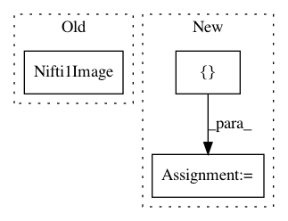

01d18e835815feedeac2fbeff8025cdd94128eaa,pynets/fmri/clustools.py,NilParcellate,create_clean_mask,#NilParcellate#,411
Before Change
self._mask_data[~self._masked_fmri_vol] = 0
del self._masked_fmri_vol
self._clust_mask_corr = "%s%s%s%s" % (self._dir_path, "/", mask_name, ".nii")
self._clust_mask_corr_img = nib.Nifti1Image(self._mask_data, affine=self._clust_mask_img.affine,
header=self._clust_mask_img.header)
nib.save(self._clust_mask_corr_img, self._clust_mask_corr)
self._clust_mask_img.uncache()
del self._mask_data
gc.collect()
After Change
mask_res_img = compute_gray_matter_mask(resample_img(self._mask_img, target_affine=func_vol_img.affine,
target_shape=func_vol_img.shape,
interpolation="nearest"))
self._clust_mask_corr_img = intersect_masks([math_img("img > 0", img=func_vol_img),
math_img("img > 0", img=clust_mask_res_img),
math_img("img > 0", img=mask_res_img)],
threshold=1, connected=False)
self._mask_img.uncache()
mask_res_img.uncache()
else:
self._clust_mask_corr_img = intersect_masks([math_img("img > 0", img=func_vol_img),
In pattern: SUPERPATTERN
Frequency: 3
Non-data size: 3
Instances
Project Name: dPys/PyNets
Commit Name: 01d18e835815feedeac2fbeff8025cdd94128eaa
Time: 2019-12-09
Author: dpisner@utexas.edu
File Name: pynets/fmri/clustools.py
Class Name: NilParcellate
Method Name: create_clean_mask
Project Name: nilearn/nilearn
Commit Name: 51d6b543e193cf385f97ff216400a7f0f54f289a
Time: 2015-02-11
Author: danilobzdok@gmail.com
File Name: nilearn/input_data/tests/test_nifti_masker.py
Class Name:
Method Name: test_mask_4d
Project Name: nipy/dipy
Commit Name: b92be51f6fc463ab7deef20fab640b3b2f50b497
Time: 2013-08-06
Author: garyfallidis@gmail.com
File Name: doc/examples/brain_extraction.py
Class Name:
Method Name: